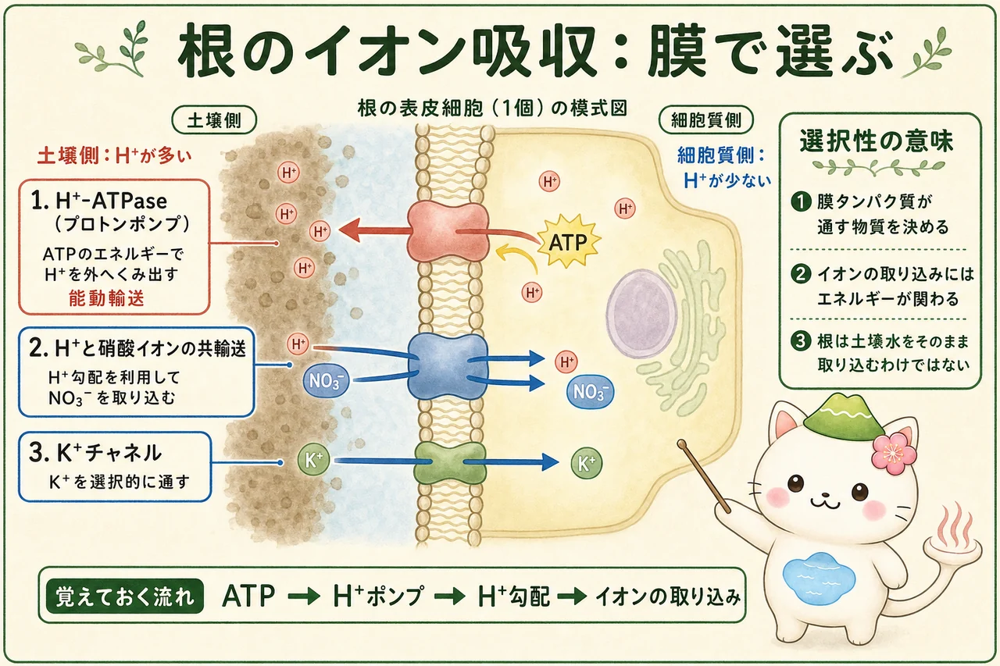

根は土壌との境目である
根が吸収するのは、土の粒そのものではなく、土壌のすき間にある水と、その中に溶けた無機イオンです。根の表面には細長い根毛が多数伸びる部分があり、土壌と接する面積を大きくします。水は水ポテンシャルの差にしたがって根へ入り、窒素・リン・カリウムなどの栄養元素は、イオンの形で細胞膜を越えます。
しかし、根は水溶液を無差別に取り込むわけではありません。土壌中のイオンの量、pH、酸素の多さ、温度、乾湿、根の成長段階、土壌微生物との関係によって、吸収できる量や割合は変わります。根の役目は「吸う」だけでなく、外の環境を測りながら、植物体の内側へ渡す物質を調節することです。
外側から木部までのつくり
根の成熟部を横断面で見ると、外側から表皮、皮層、内皮、中心柱が並び、中心柱の中に木部と師部があります。根毛は表皮の細胞が伸びたものです。皮層の細胞は、水や溶質が内側へ進む通り道であると同時に、貯蔵などにも関わります。
内皮は、皮層と中心柱の境目にある一層の細胞群です。ここにはカスパリー線という、細胞壁の一部を性質の異なる物質で固めた帯があります。この帯があるため、細胞壁だけを通ってきた水や溶質は、内皮でそのまま中心柱へ抜けられません。細胞膜を越える段階が必ず入ることで、植物は木部へ渡す物質を調節できます。

二つの経路とカスパリー線
水や溶質が根の組織を横切る道には、大きく二つあります。アポプラスト経路は細胞壁や細胞間隙を通る道、シンプラスト経路は細胞膜を越えて細胞質へ入り、原形質連絡を通って隣の細胞へ渡る道です。同じ根の中でも、物質は一方だけでなく、場所や条件によって両方の道を使います。
アポプラスト経路は内皮のカスパリー線で遮られます。そこで水と溶質は内皮細胞の細胞膜を越え、選択を受けたうえで中心柱側へ進みます。この「一度は膜を通す」仕組みが重要です。もし細胞壁側の道がそのまま木部まで続けば、土壌中の不要なイオンや病原体などが、より無選別に中心部へ入りやすくなります。

「アポプラスト」と「シンプラスト」は、どちらも根の中を通る道の名前だよ。見分け方は簡単。細胞壁の外側を通るならアポプラスト、細胞の中どうしを原形質連絡でつなぐならシンプラスト、と考えよう。
膜タンパク質がイオンを選ぶ
イオンは電荷をもつため、脂質二重層からできた細胞膜を自由には通れません。根の細胞膜には、特定のイオンを通すチャネル、別の物質と組にして運ぶ共輸送体、ATPのエネルギーを使うポンプなどの膜タンパク質があります。どのタンパク質がどこで働くかによって、根が取り込むイオンの種類と量が変わります。
代表的なしくみは、細胞膜のH+-ATPase（プロトンポンプ）です。これはATPを使ってH+を細胞の外へくみ出し、膜をはさんだH+勾配と電気的な差をつくります。硝酸イオン（NO3−）の取り込みには、このH+勾配を利用する共輸送が使われることがあります。ここでATPが直接動かすのはポンプであり、共輸送体はポンプがつくった勾配を利用する点が大切です。

吸収量を変える環境
根が働くには呼吸が必要です。土壌が過湿で空気のすき間が減ると、根の周囲の酸素が不足し、ATPを必要とする輸送も影響を受けます。乾燥では土壌水の水ポテンシャルが下がり、水は根へ入りにくくなります。土壌pHはイオンの溶け方や、根の表面で働く輸送タンパク質の条件に関わります。
また、根の外には菌根菌など、根と協力して水や無機イオンの獲得に関わる生物もいます。ただし、その効果は植物種、菌の種類、土壌の養分状態などで変わります。根の吸収は根だけで完結せず、土壌・微生物・地上部からの要求が交わる場所で調節されているのです。
肥料を増やせばいつでも吸収が増える、とは限らないよ。根が呼吸できるか、水が動けるか、必要な形のイオンとして存在するかも大事。根のまわりの環境と、細胞膜のしくみをいっしょに見よう。
この冊子の要点
- 根毛は土壌水と接する面積を広げ、根は水と無機イオンを選びながら植物体へ渡します。
- 根の外側から内側へは、表皮・皮層・内皮・中心柱・木部と並びます。
- アポプラスト経路は細胞壁側、シンプラスト経路は細胞質と原形質連絡を通る経路です。
- 内皮のカスパリー線はアポプラスト経路を遮り、木部へ渡す前に膜による選択を入れます。
- H+-ATPaseがつくる勾配と膜タンパク質の働きにより、根はイオンを選択的に取り込みます。
参照資料
- OpenStax Biology 2e：Roots
- Taiz et al., Plant Physiology and Development, Oxford University Press.
- Geldner, N. (2013). The endodermis. Annual Review of Plant Biology, 64, 531–558.